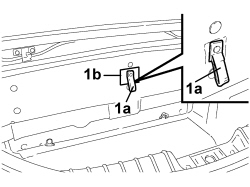
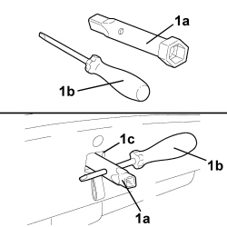
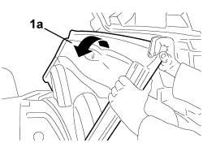
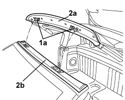
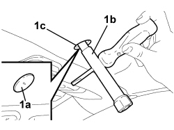
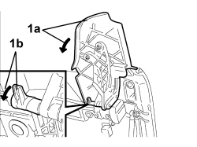
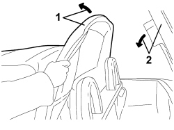
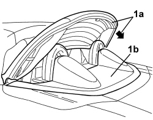
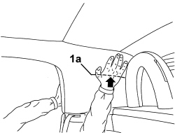

7030H02 HOOD EMERGENCY CLOSING - CARRY OUT PROCEDURE
- Path
- Procedures > 70 FITTINGS > 7030 SUN ROOF/GLASS PANEL > 7030H AUTOMATICALLY OPERATED HOOD > 7030H02 HOOD EMERGENCY CLOSING - CARRY OUT PROCEDURE
- Kind
- repair procedure (removal / refitting; the operation number is the code)
- Applies to
- engines: 2.2 JTS, 3.2 JTS; all production periods
- Interactive page
- https://sloeber94.github.io/elrnDB-aBrrSpdr/en/#/946004088
Applies to: engines: 2.2 JTS, 3.2 JTS; all production periods
- Open the oddments compartment behind the right seat.
1. Pull the hydraulic system pressure release valve operating cable (1a) until it is in the end of travel position. If necessary, use the screwdriver (1b).

Applies to: engines: 2.2 JTS, 3.2 JTS; all production periods
1. Open the boot using the electric control. If this is not possible, open it pulling the emergency control (1a) after having opened the oddments compartment behind the left seat.

Applies to: engines: 2.2 JTS, 3.2 JTS; all production periods

Applies to: engines: 2.2 JTS, 3.2 JTS; all production periods
1. Take the spanner (1a) and the screwdriver (1b) that are supplied.
2. Insert the spanner (1a) in the hexagonal socket located inside the opening (1c) then, with the help of the screwdriver (1b), turn the spanner (1a) clockwise until it is in the end of travel position (about 90°) to open the hood housing compartment cover locks.

Applies to: engines: 2.2 JTS, 3.2 JTS; all production periods
- Close the boot lid completely.
1. Carefully open the hood housing cover (1a) manually until it is in the end of travel (vertical) position.

Applies to: engines: 2.2 JTS, 3.2 JTS; all production periods
1. Raise the hood (1a) and pull it slowly until it is near the front windscreen.

Applies to: engines: 2.2 JTS, 3.2 JTS; all production periods
1. Check that the hooks (1a) for the locks are open (as illustrated).
2. Rest the front section (2a) of the hood on the windscreen crossmember (2b).

Applies to: engines: 2.2 JTS, 3.2 JTS; all production periods
1. Working in the centre of the crossmember above the windscreen, remove the cover (1a).
2. Use the spanner and the screwdriver supplied, employed for opening the hood housing cover.
Insert the spanner (1b) in the square socket located inside the opening (1c) then, with the help of the screwdriver, turn the spanner (1b) anti-clockwise until it is in the end of travel position (about 90°) to close the hood front locks.

Applies to: engines: 2.2 JTS, 3.2 JTS; all production periods
1. Working on the hood housing cover, rotate the side covers (1a) downwards after having turned the leers (1b) releasing the attachment tooth.

Applies to: engines: 2.2 JTS, 3.2 JTS; all production periods
1. Raise the hood 5th arc slowly until it is in the end of travel, vertical position.
2. Lower the hood housing cover slowly until it is in the end of travel position taking care to ensure that the side covers do not interfere with other parts.

Applies to: engines: 2.2 JTS, 3.2 JTS; all production periods
1. Lower the hood 5th arc (1a) until it is resting on the cover (1b).

Applies to: engines: 2.2 JTS, 3.2 JTS; all production periods
1. Open the boot lid by pulling the emergency control (1a) after having opened the oddments compartment behind the left seat.

Applies to: engines: 2.2 JTS, 3.2 JTS; all production periods
Use the spanner and screwdriver supplied that have been used previously.
1. Insert the spanner (1a) in the hexagonal socket located inside the opening (1c) then, with the help of the screwdriver (1b), turn the spanner (1a) anti-clockwise until it is in the end of travel position (about 90°) to close the hood housing compartment cover locks.

Applies to: engines: 2.2 JTS, 3.2 JTS; all production periods
1. Completely lower the hood housing cover 5th arc, applying manual pressure, from the bottom upwards, by the side references (1a) on the hood inner fabric (this operation allows the inner levers to go past the dead lock and lower the 5th arc completely).

Applies to: engines: 2.2 JTS, 3.2 JTS; all production periods
- The hood is closed. If necessary, it is possible to move the vehicle.
Op. 7030H03 HOOD MANUAL OPENING FOLLOWING DEACTIVATION OF HYDRAULIC SYSTEM - CARRY OUT PROCEDURE